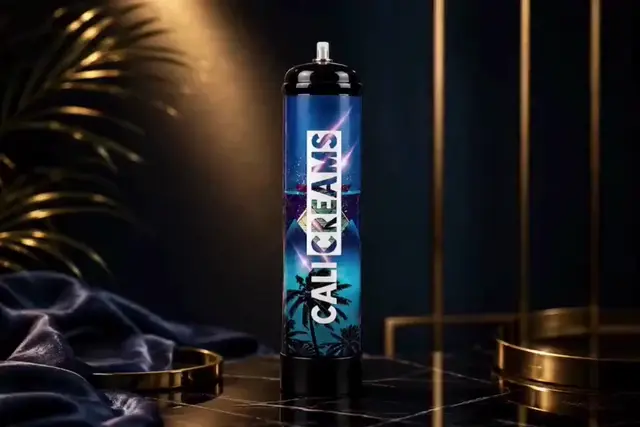
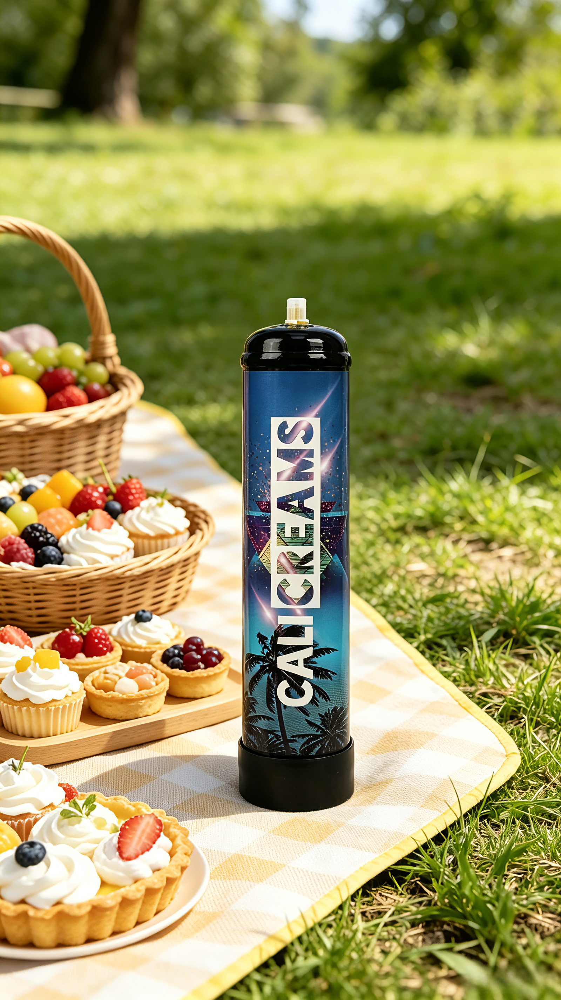
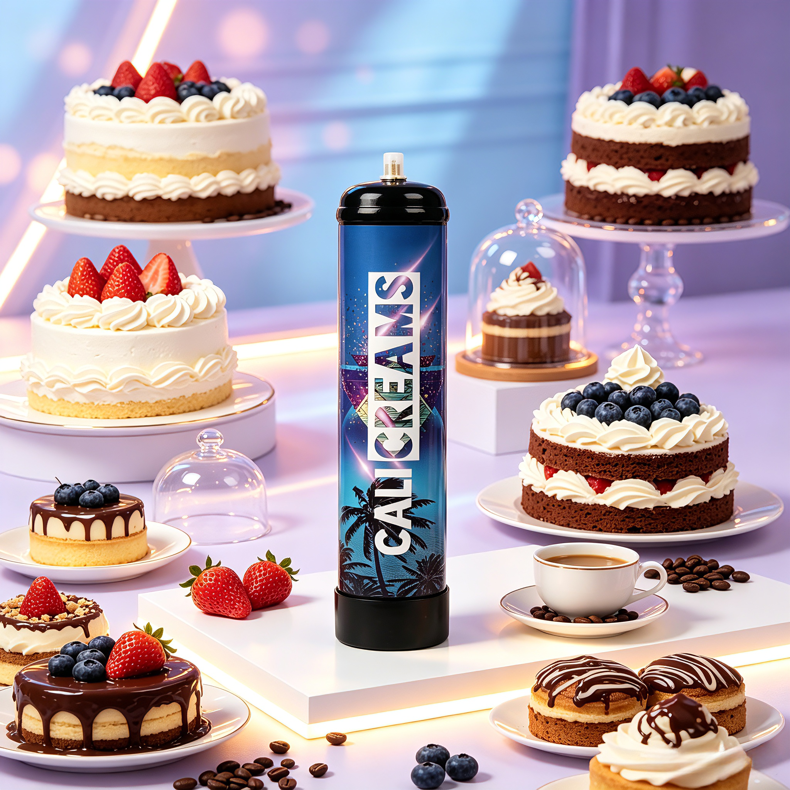
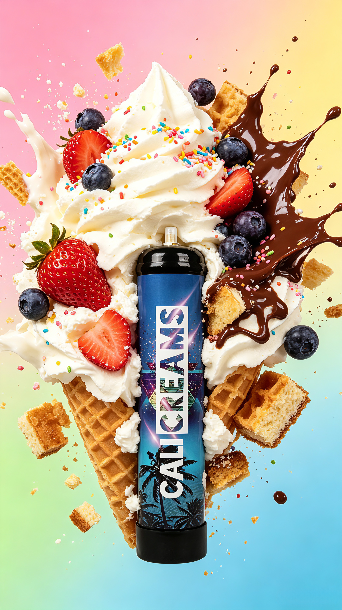
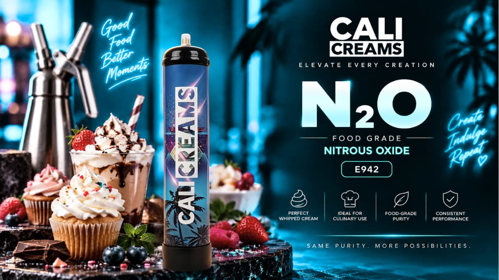
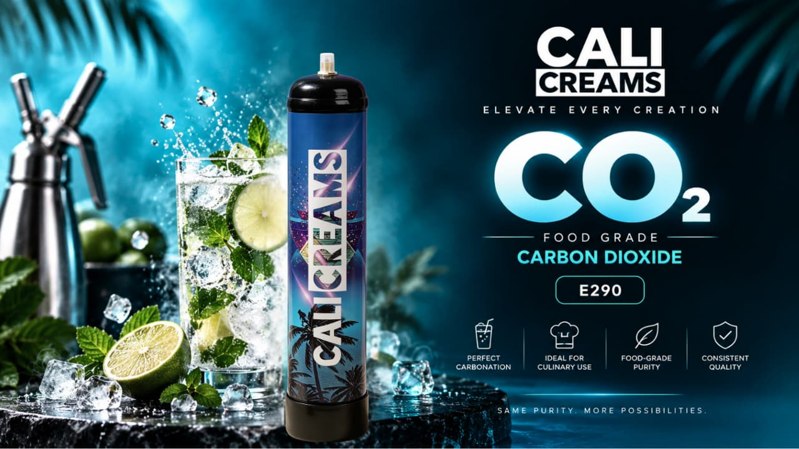
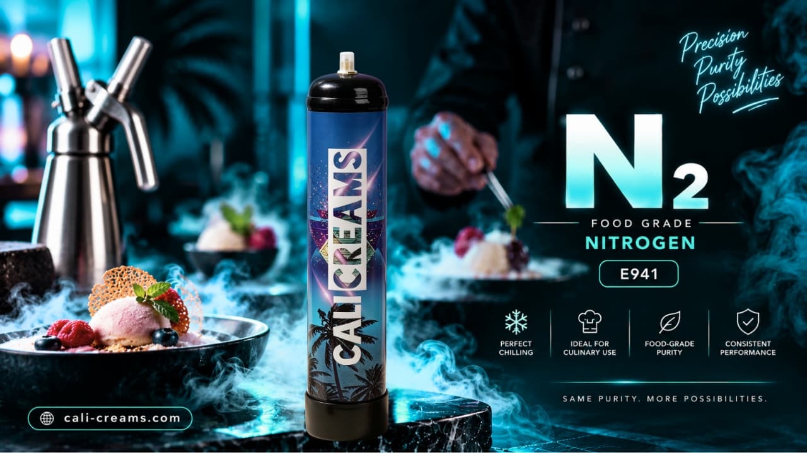
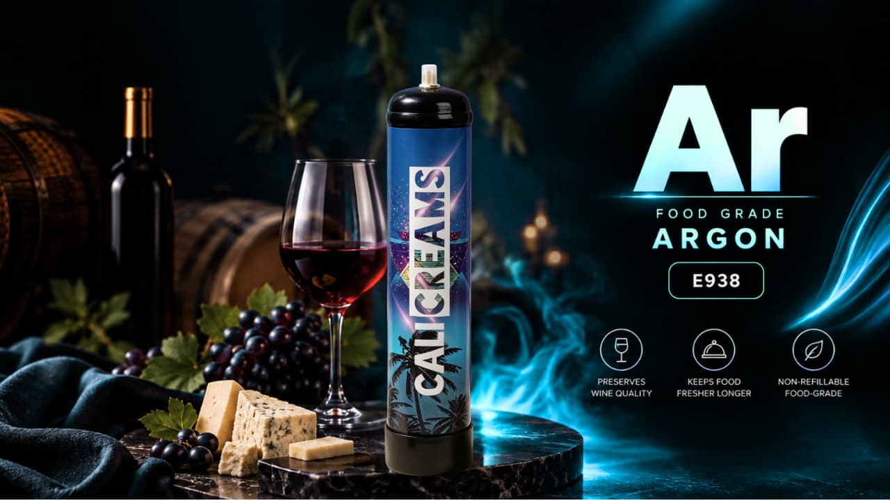

Food-Grade
Purpose-built for professional use
Professional Food-Grade Gases
N₂O · CO₂ · N₂ · Ar
Discover the Cali Creams range of food-grade gases developed for professional culinary, beverage, hospitality and food-industry applications. From creating beautifully aerated culinary textures to carbonation and preservation applications, Cali Creams brings together professional performance, consistency and responsible product use.
Purpose-built for professional use
Consistent flow and performance
Safe handling and correct use
Cali Creams Promotion

Introducing Cali Creams
Cali Creams is a professional food-grade gas brand created for the evolving world of gastronomy, hospitality and food & beverage production.
Modern kitchens and beverage environments demand more than ingredients. They require consistency, precision and dependable equipment. That philosophy sits at the heart of Cali Creams.
Our professional range includes food-grade gases for appropriate culinary, beverage and food-industry applications—from nitrous oxide for aeration to carbon dioxide for carbonation and nitrogen and argon for suitable preservation applications.
Better ingredients. Better control. Better possibilities.



Our Range
Different applications require different gases. Cali Creams brings them together under one professional range.

N₂OE942
Designed for appropriate professional culinary applications including whipped cream, aerated preparations and culinary foams when used with compatible equipment.

CO₂E290
Designed for appropriate food and beverage applications including carbonation and selected professional food-processing uses.

N₂E941
An inert food-grade gas suitable for appropriate food and beverage applications, including selected preservation and controlled-atmosphere processes.

ArE938
An inert food-grade gas suited to selected professional preservation applications, particularly where limiting exposure to atmospheric oxygen is desirable.
Why Cali Creams?
Every detail matters when you're creating something people will taste, serve or experience. Cali Creams is built around four principles.
Our focus begins with supplying food-grade gases intended for their appropriate professional food and beverage applications.
Professional environments rely on repeatability. Cali Creams is positioned around dependable, consistent performance from one application to the next.
From culinary aeration and carbonation to appropriate preservation applications, the Cali Creams range serves multiple areas of the professional food and beverage industry.
Professional products require professional handling. Responsible use, appropriate storage, equipment compatibility and proper cylinder disposal are fundamental to the Cali Creams philosophy.
Culinary Possibilities
Food-grade gases give culinary and beverage professionals additional ways to manipulate texture, presentation, carbonation and preservation.
Suitable pressure and compatible equipment can help create the familiar light aerated texture associated with whipped cream.
Professional recipes and compatible equipment can help deliver distinctive foam textures for plating and presentation.
Pastry and dessert professionals can use gas-assisted techniques for elegant finishing and texture control.
Carbon dioxide supports carbonation in suitable beverages under controlled pressure and professional systems.
Inert gases such as nitrogen and argon can support selected preservation and controlled-atmosphere applications.
Safety First
Food-grade does not mean risk-free. Cali Creams cylinders contain compressed or liquefied gases and must always be handled, transported, stored and used according to the product label, safety data sheet and applicable regulations.
Never intentionally inhale gases. Nitrous oxide is intended for legitimate culinary and food applications only.
Only use equipment designed and rated for the specific gas, valve and operating pressure.
Do not expose cylinders to fire, flames, excessive heat or temperature conditions beyond the product specification.
Store cylinders in a suitable, well-ventilated area, away from children, heat sources and unauthorised use.
Responsible Use
Cali Creams products are intended for legitimate professional use. Follow the instructions specified with the cylinder, keep valves closed when not in use, and recycle or dispose of empty cylinders in accordance with local requirements.
FAQ
Cali Creams is a professional food-grade gas brand created for culinary, beverage, hospitality and food-industry applications.
The Cali Creams range covers N₂O — Nitrous Oxide — E942, CO₂ — Carbon Dioxide — E290, N₂ — Nitrogen — E941 and Ar — Argon — E938.
Cali Creams Food-Grade N₂O is intended for appropriate culinary applications, including aerating suitable preparations such as whipped cream and culinary foams using compatible equipment.
No. Cali Creams N₂O is intended for legitimate food and culinary applications and must not be intentionally inhaled.
Follow the storage requirements printed on the product label and contained within the relevant Safety Data Sheet. Cylinders should be protected from damage and inappropriate heat.
Recycling requirements vary by cylinder and jurisdiction. Follow the disposal instructions supplied with the product and your local regulations for pressurised containers.